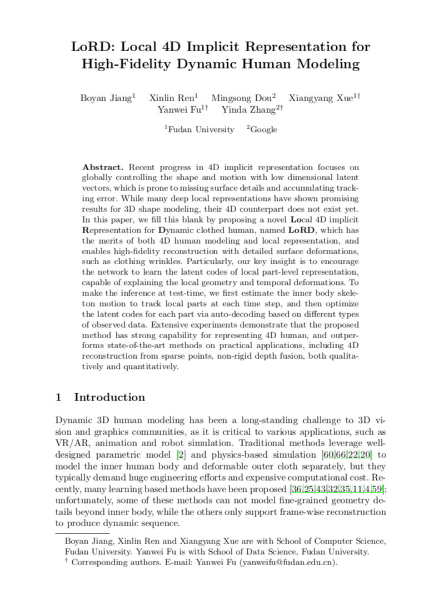
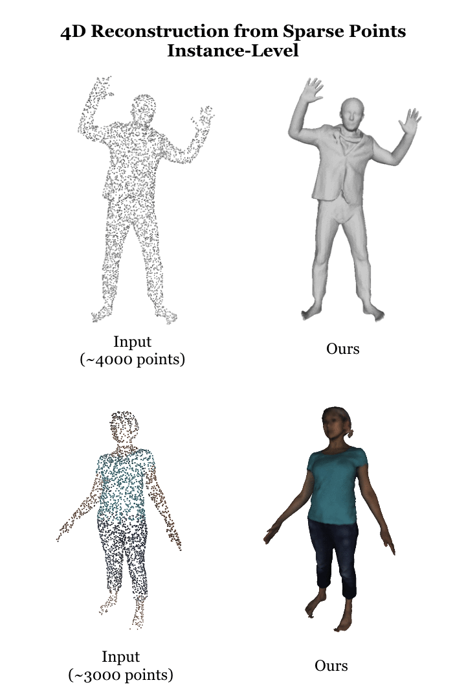
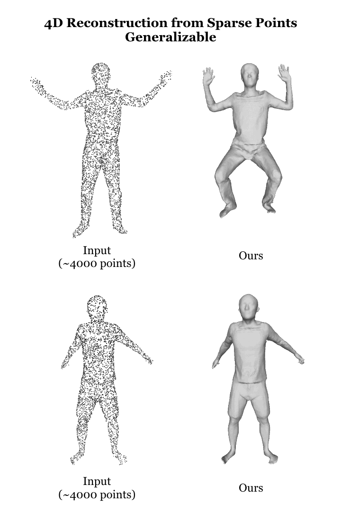
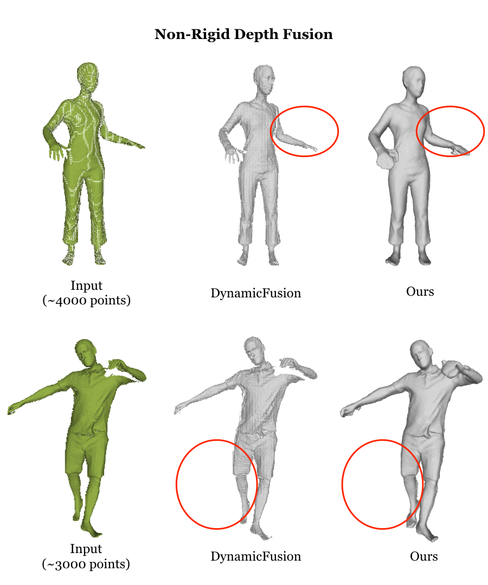

|
1Fudan University 2Google
|
|
Overview of Our LoRD Representation.
We introduce a local 4D implicit representation
for dynamic human, which has the merits of both 4D human modeling
and local representation, and enables high-fidelity reconstruction
from sparse point clouds or RGB-D videos
|
Recent progress in 4D implicit representation focuses on globally controlling the shape and motion
with low dimensional latent vectors, which is prone to missing surface details and accumulating
tracking error. While many deep local representations have shown promising results for 3D shape
modeling, their 4D counterpart does not exist yet. In this paper, we fill this blank by proposing
a novel Local 4D implicit Representation for Dynamic clothed human, named LoRD, which has the
merits of both 4D human modeling and local representation, and enables high-fidelity reconstruction
with detailed surface deformations, such as clothing wrinkles. Particularly, our key insight is
to encourage the network to learn the latent codes of local part-level representation,
capable of explaining the local geometry and temporal deformations. To make the inference at test-time,
we first estimate the inner body skeleton motion to track local parts at each time step,
and then optimize the latent codes for each part via auto-decoding based on different
types of observed data. Extensive experiments demonstrate that the proposed method has
strong capability for representing 4D human, and outperforms state-of-the-art methods
on practical applications, including 4D reconstruction from sparse points,
non-rigid depth fusion, both qualitatively and quantitatively.
|  |
B. Jiang, X. Ren, M. Dou, X. Xue, Y. Fu, Y. Zhang
LoRD: Local 4D Implicit Representation for High-Fidelity Dynamic Human Modeling ECCV 2022 [arXiv] [GitHub] |
Video |
|

|

|

|
Acknowledgements
This work was supported by Shanghai Municipal Science
and Technology Major Projects (No.2018SHZDZX01, and 2021SHZDZX0103).
The corresponding authors are Xiangyang Xue, Yanwei Fu and Yinda Zhang.
The website is modified from this template.
|